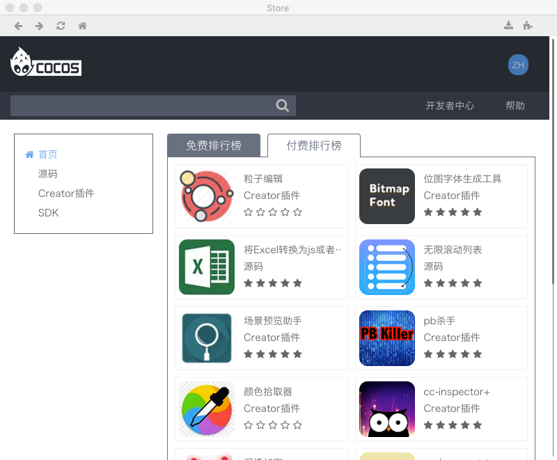
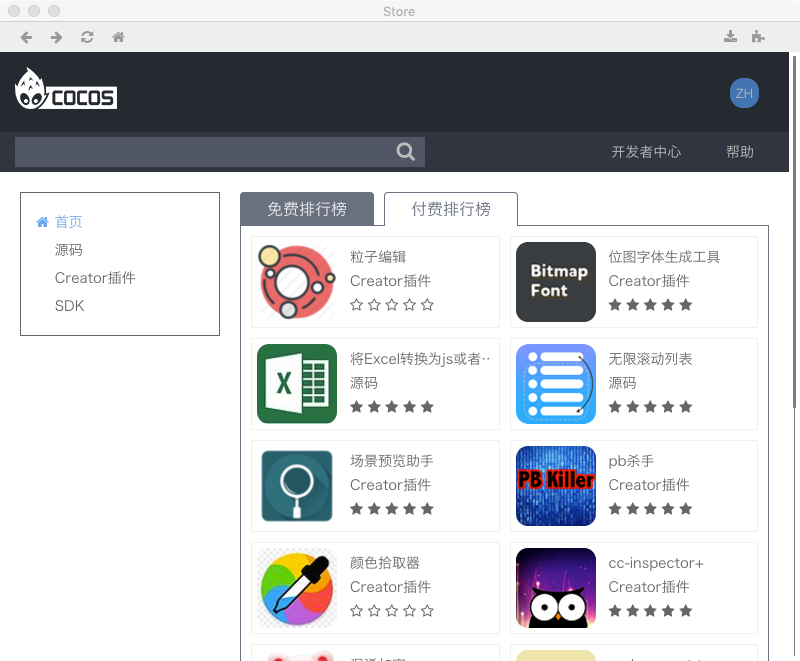

Cocos Creator 插件基础知识
什么是Cocos Creator 插件
CocosCreator插件是基于CocosCreator运行的一种插件程序
- 只能运行在CocosCreator中,不能独立运行
- 插件的开发规范受CocosCreator的约束
如何下载插件
CocosCreator有自己的插件商店,所有开发者提交的插件都会放在这里,要下载使用这些插件,你需要:
- 下载并安装Cocos Creator
- 打开cocos creator,在菜单中依次点击 扩展=>扩展商店, 来到插件商店
 
 - 选择自己喜欢的插件,下载安装使用吧!
安装过程中你会遇到安装提示
- 项目目录: 只有本项目工程才能使用这个插件
- 全局目录: 所有的Creator项目都可以使用这个插件
如何移除插件
全局安装
- Mac
找到路径/Users/xxx/.CocosCreator/packages，这个目录保存了你安装的所有全局插件，删除对应的文件夹就好了。
- Windows
在C盘用户目录下也有这个文件夹，C:/用户/xxx/.CocosCreator/packages，也是删除插件对应的文件夹。
注意：.CocosCreator文件夹默认是隐藏的
项目安装
找到 项目目录/packages/xxx, 删除xxx文件夹即可